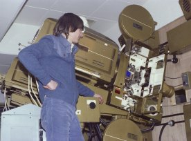
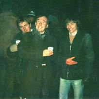
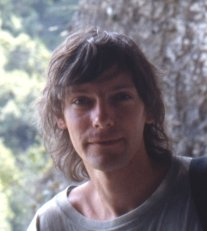
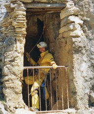
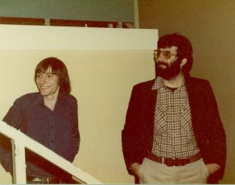

Initial studies at the University of Warwick (1973-6) gave Clive Gardener a sound grounding in film criticism through the introduction to film studies course taught by Robin Wood. His written work was published in 'Framework' magazine. During 1975-7 he produced and directed a 16mm film 'Wanted Dead & Alive', with assistance from the Lord Rootes Memorial Fund, West Midlands Arts Association and BBC Film Club.
As a parting shot for the University of Warwick Film Society in 1976, Clive purchased and restored, with the assistance of university technician Terry Williams, two Gaumont-Kalee 35mm cinema projectors, which did good service for 17 years. This equipment also included a 4-track surround sound system and silver screen for 3-D movies, enabling Warhol's 'Flesh for Frankenstein' to be shown. John Goldstone brought Monty Python's 'Life of Brian' to the cinema on 27th June 1979 for its fourth audience and first public screening in the world. In 1993 Clive encouraged the students to follow his path and take the opportunity they were offered to upgrade their system to 70mm 6-track sound capability, using Victoria-8 dual-gauge projection equipment, which Warwick Student Cinema still operates to the present day.
Following previous years' summer-holiday-relief film projection work for Star (1973) and Classic (1974) Cinemas, then BBC TV Enterprises (1975), Clive Gardener commenced his broadcast television career working for the BBC TV Film Department as a film projectionist in 1976. He worked at Ealing Film Studios, Lime Grove Studios and Television Centre.
In 1977 he joined the film unit at Pebble Mill, Birmingham where he trained as a film editor, being taught film-editing skills by Henry Fowler who had commenced his career processing negatives for the feature film 'The Third Man'. Amongst other programmes Clive gained credits on the 3rd original series of 'All Creatures Great & Small', 'Top Sailing', 'Top Gear' and 'Pebble Mill at One' series.
In order to progress his filmmaking career, with no suitable vacancies being available in BBC TV, Clive said goodbye to Birmingham in 1982 to transfer to London as a freelance film & sound editor. He was employed by Central Productions, BBC Television, Goldcrest Films & Television, Spectre Productions, Large Door, James Wotton, CW Productions, Vintage Dream and the University of Warwick, amongst other production companies. Film drama, documentary and commercial subjects were his specialities during this period. He later converted from film to off-line video editing to work for Skyline Films & Television on their 'Senior Service' news programme contract with Channel Four Television.
During the 1980s-90s, Clive carried out original explorations in the caves of Llangattock Mountain near Crickhowell, Powys, as a member of Chelsea Spelæological Society and in association with other South Wales-based cave explorers. He filmed the remote underground discoveries, which he initiated in the Daren Cilau cave system, for BBC TV Wales in 1987. The television programme 'Blue Peter', under the management of the founding producer Biddy Baxter, took up his footage and reconstructed a cave set in their studio for retelling the story of an epic 9-day underground camp. Clive and others in the team were interviewed by Caron Keating to recount their subterranean Welsh explorations, for which his work in producing a comprehensive three-part book on the 20th century discoveries, and earlier industrial history of the 'Heads of the Valleys' region, is now at the picture lay-up stage in readiness for publication.
Clive has since formed 'The Secret Bottletop Production Company', with guidance from André Garner, Roger Lustig and Mike Ash, through which he has produced a video-film on the history of underwater exploration, 'DIVING From the Past - Into the Future'. This production was edited by Guy Morley at Metropolis, with digital animations by Rob Murgatroyd, special digital video-effects by Oasis Television, dubbed in surround sound by Steve Rogers at London Post and conformed at TSI Video and Soho 601. A 60-minute version has been broadcast on the ARTE satellite channel in Europe and on NDR in Germany. It won le Prix de la F.F.E.S.S.M. at the Toulon International Maritime & Exploration Film Festival in 1998, led to Clive Gardener receiving the Reg Vallintine Award for Historical Diving Achievement in 1998 and continues to be screened at European festivals.
Current projects include preparations for the re-opening and surveying of the historic Blaenavon-Pwll Du tramroad tunnel, in the Blaenavon Industrial Landscape World Heritage Site, around which Clive is also in the process of constructing a digital-film presentation. Other long-standing extensive historical research, with archive research assistance from Dawn Zeffertt, into the shipment and loss at sea in the vessel Beatrice of Egyptian antiquities from the tomb of Menkaure at Giza, is nearing readiness for the development of a major film production - with interest in the story currently being expressed by National Geographic Television.
© The Secret Bottletop
Production Company Limited 18
March, 2001
Web Pages by Stone Cottage Industries
Images on this page scanned using Epson Perfection technology and
prepared in Adobe Photoshop